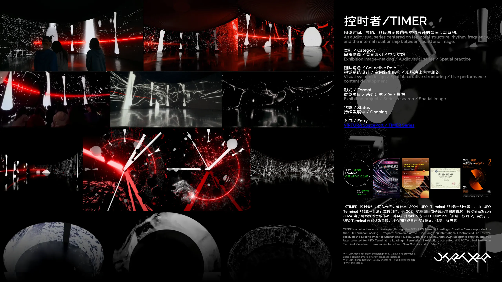
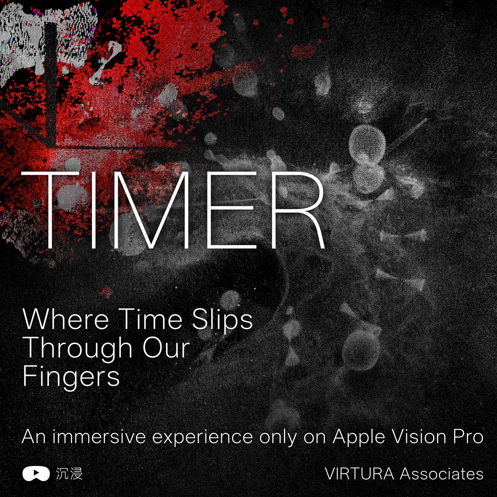

TIMER | 控时者
时间结构 / 音画关系 / 感知节奏 / 现场状态切换
控时者 TIMER 系列围绕时间结构、音画关系与感知节奏展开，持续处理声音如何进入图像之中，并成为组织空间、切换状态与重新分配注意力的材料。它更关心声音如何在图像之中建立一种结构性的时间感。
核心关注
时间结构
Temporal Structure
音画关系
Audiovisual Structure
感知节奏
Perceptual Rhythm
状态切换
States of Entry
代表作品
《TIMER 控时者》是这个系列的代表作，获 ChinaGraph 2024 电子剧场优秀音乐作品二等奖，最终入选 UFO Terminal「加载…权限 2」展览。这一系列测试声音如何成为图像之中的组织材料，并进一步打开时间结构、视觉节奏与空间感知之间的关系。

高斯空间归档 / Spatial Archive
这是 VIRTURA 团队 TIMER 场景章节 的高斯化版本。它把团队项目里原本更适合视频传播的场景资料，转成一个可直接嵌入网页、可继续进入空间观看路径的轻量场景。
对 TIMER 来说，这个入口用于补足“先把观看状态空间化”的那一层表达。项目本身属于团队实践，空间转译、网页嵌入和归档整理由钱誉文单独完成，也能和后续 Vision Pro / XR 展示方向自然接上。
为什么重要
它提供了视频之外的另一种观看方式，让 TIMER 的时间结构开始以空间入口的形式被保存和进入。
后续方向
这类高斯场景可以继续往网页展示、空间视频、Vision Pro 观看路径或更完整的 XR 原型发展。